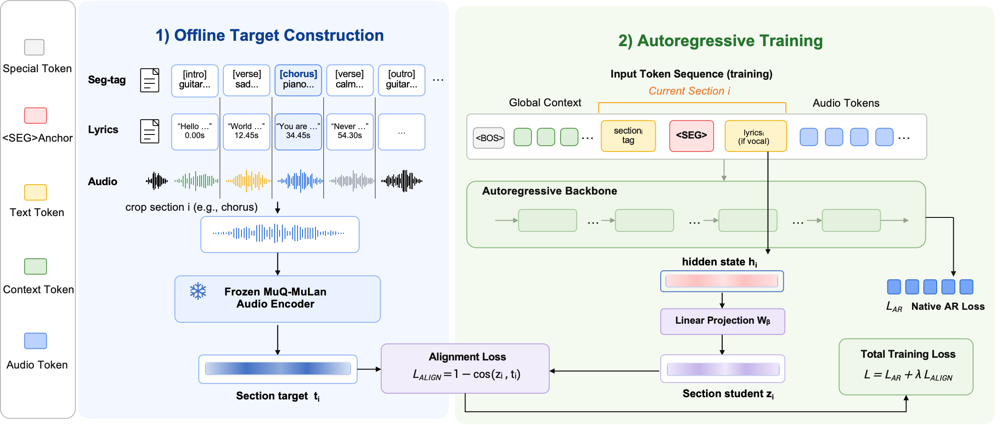

Improving Fine-Grained Style Controllability in Autoregressive Song Generation via Segment-Wise Cross-Modality Supervision
Compare standard fine-tuning with SCMS on HeartMuLa and Muse. Listen for how each generated song follows the style descriptions of its individual segments.
Listen to the comparisons01 / METHOD
Segment-wise cross-modality supervision
SCMS supplements autoregressive token prediction with a semantic alignment loss. Segment-level prompt representations are aligned with music embeddings extracted from the corresponding ground-truth audio by a frozen encoder.

02 / AUDIO SAMPLES
Same prompts. Two training methods.
2 Chinese · 3 English songs
Compare SFT and SCMS within each backbone. Starting one player pauses the others. Audio is presented as full songs; segment timings may differ between outputs.
Loading audio examples…